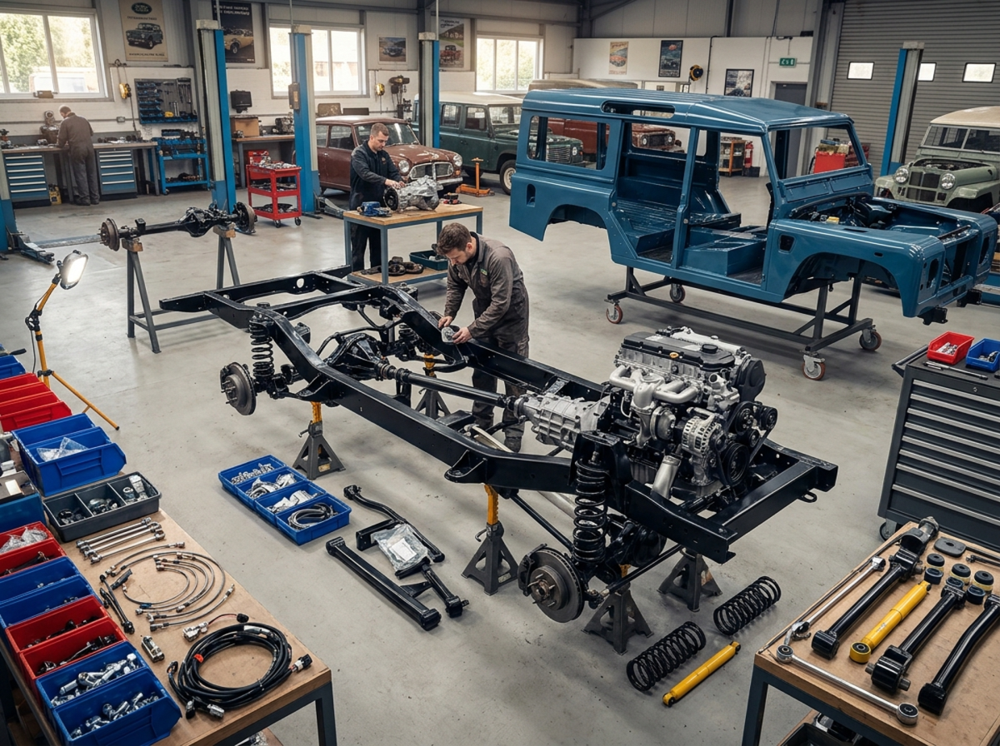

Restoration Service
Frame-Off Restoration
Precision rebuilds restore heritage rigs to factory-plus condition with full chassis, drivetrain, and finish work.
Pricing Estimate: LKR 280,000 - 420,000
Duration: 4-8 weeks
Compatibility: Classic 4x4s & Offroad Platforms
Workshop Notes
Our restoration team catalogs corrosion, replaces worn mounts, and then refines the frame with protective coatings for long-term resilience.
Included Upgrades
- Chassis reinforcement & corrosion control
- Engine rebuild prep + performance calibration
- High-strength suspension mounting points
- Modern protection and finish coating

Detailed Description
Full frame-off restoration includes dismantling suspension, mechanical systems, and body mounts for an exacting rebuild. We preserve original character while integrating tactical durability upgrades.
Compatibility
- Land Rover Defender
- Toyota Land Cruiser
- Jeep Wrangler & Classic 4x4 platforms
Service Duration
This service typically runs 4 to 8 weeks depending on condition and upgrade scope.
Before / After Gallery

Workshop Notes
We track every stage with digital inspection reports and apply premium seam sealing, frame preservation, and chassis-level detailing.